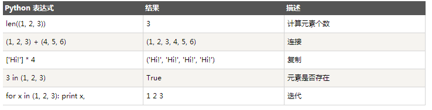
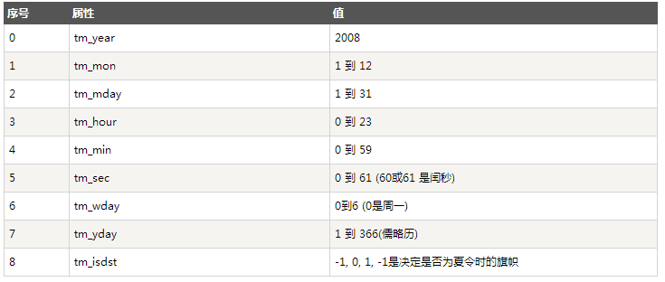

1、字符串
1.1、如何在Python中使用字符串
a、使用单引号(')
用单引号括起来表示字符串，例如：
str='this is string';
print str;b、使用双引号(")
双引号中的字符串与单引号中的字符串用法完全相同，例如：
str="this is string";
print str;c、使用三引号(''')
利用三引号，表示多行的字符串，可以在三引号中自由的使用单引号和双引号，例如：
str='''this is string
this is pythod string
this is string'''
print str;2、布尔类型
bool=False;
print bool;
bool=True;
print bool;3、整数
int=20;
print int;4、浮点数
float=2.3;
print float;5、数字
包括整数、浮点数。
5.1、删除数字对象引用，例如：
a=1;
b=2;
c=3;
del a;
del b, c;
\#print a; #删除a变量后，再调用a变量会报错5.2、数字类型转换
int(x [,base]) 将x转换为一个整数
float(x ) 将x转换到一个浮点数
complex(real [,imag]) 创建一个复数
str(x) 将对象x转换为字符串
repr(x) 将对象x转换为表达式字符串
eval(str) 用来计算在字符串中的有效Python表达式,并返回一个对象
tuple(s) 将序列s转换为一个元组
list(s) 将序列s转换为一个列表
chr(x) 将一个整数转换为一个字符
unichr(x) 将一个整数转换为Unicode字符
ord(x) 将一个字符转换为它的整数值
hex(x) 将一个整数转换为一个十六进制字符串
oct(x) 将一个整数转换为一个八进制字符串5.3、数学函数
abs(x) 返回数字的绝对值，如abs(-10) 返回 10
ceil(x) 返回数字的上入整数，如math.ceil(4.1) 返回 5
cmp(x, y) 如果 x < y 返回 -1, 如果 x == y 返回 0, 如果 x > y 返回 1
exp(x) 返回e的x次幂(ex),如math.exp(1) 返回2.718281828459045
fabs(x) 返回数字的绝对值，如math.fabs(-10) 返回10.0
floor(x) 返回数字的下舍整数，如math.floor(4.9)返回 4
log(x) 如math.log(math.e)返回1.0,math.log(100,10)返回2.0
log10(x) 返回以10为基数的x的对数，如math.log10(100)返回 2.0
max(x1, x2,...) 返回给定参数的最大值，参数可以为序列。
min(x1, x2,...) 返回给定参数的最小值，参数可以为序列。
modf(x) 返回x的整数部分与小数部分，两部分的数值符号与x相同，整数部分以浮点型表示。
pow(x, y) x**y 运算后的值。
round(x [,n]) 返回浮点数x的四舍五入值，如给出n值，则代表舍入到小数点后的位数。
sqrt(x) 返回数字x的平方根，数字可以为负数，返回类型为实数，如math.sqrt(4)返回 2+0j6、列表
6.1、初始化列表，例如：
list=['physics', 'chemistry', 1997, 2000];
nums=[1, 3, 5, 7, 8, 13, 20];6.2、访问列表中的值，例如：
'''nums[0]: 1'''
print "nums[0]:", nums[0]
'''nums[2:5]: [5, 7, 8] 从下标为2的元素切割到下标为5的元素，但不包含下标为5的元素'''
print "nums[2:5]:", nums[2:5]
'''nums[1:]: [3, 5, 7, 8, 13, 20] 从下标为1切割到最后一个元素'''
print "nums[1:]:", nums[1:]
'''nums[:-3]: [1, 3, 5, 7] 从最开始的元素一直切割到倒数第3个元素，但不包含倒数第三个元素'''
print "nums[:-3]:", nums[:-3]
'''nums[:]: [1, 3, 5, 7, 8, 13, 20] 返回所有元素'''
print "nums[:]:", nums[:]6.3、更新列表，例如：
nums[0]="ljq";
print nums[0];6.4、删除列表元素
del nums[0];
'''nums[:]: [3, 5, 7, 8, 13, 20]'''
print "nums[:]:", nums[:];6.5、列表脚本操作符
列表对+和的操作符与字符串相似。+号用于组合列表，号用于重复列表，例如：
print len([1, 2, 3]); #3
print [1, 2, 3] + [4, 5, 6]; #[1, 2, 3, 4, 5, 6]
print ['Hi!'] * 4; #['Hi!', 'Hi!', 'Hi!', 'Hi!']
print 3 in [1, 2, 3] #True
for x in [1, 2, 3]: print x, #1 2 36.6、列表截取
L=['spam', 'Spam', 'SPAM!'];
print L[2]; #'SPAM!'
print L[-2]; #'Spam'
print L[1:]; #['Spam', 'SPAM!']6.7、列表函数&方法
list.append(obj) 在列表末尾添加新的对象
list.count(obj) 统计某个元素在列表中出现的次数
list.extend(seq) 在列表末尾一次性追加另一个序列中的多个值(用新列表扩展原来的列表)
list.index(obj) 从列表中找出某个值第一个匹配项的索引位置，索引从0开始
list.insert(index, obj) 将对象插入列表
list.pop(obj=list[-1]) 移除列表中的一个元素(默认最后一个元素)，并且返回该元素的值
list.remove(obj) 移除列表中某个值的第一个匹配项
list.reverse() 反向列表中元素，倒转
list.sort([func]) 对原列表进行排序7、元组(tuple)
Python的元组与列表类似，不同之处在于元组的元素不能修改；元组使用小括号()，列表使用方括号[]；元组创建很简单，只需要在括号中添加元素，并使用逗号(,)隔开即可，例如：
tup1 = ('physics', 'chemistry', 1997, 2000);
tup2 = (1, 2, 3, 4, 5 );
tup3 = "a", "b", "c", "d";创建空元组，例如：tup = ();
元组中只有一个元素时，需要在元素后面添加逗号，例如：tup1 = (50,);
元组与字符串类似，下标索引从0开始，可以进行截取，组合等。
7.1、访问元组
tup1 = ('physics', 'chemistry', 1997, 2000);
#tup1[0]: physics
print "tup1[0]: ", tup1[0]
#tup1[1:5]: ('chemistry', 1997)
print "tup1[1:5]: ", tup1[1:3]7.2、修改元组
元组中的元素值是不允许修改的，但我们可以对元组进行连接组合，例如:
tup1 = (12, 34.56);
tup2 = ('abc', 'xyz');# 以下修改元组元素操作是非法的。
# tup1[0] = 100;
# 创建一个新的元组
tup3 = tup1 + tup2;
print tup3; #(12, 34.56, 'abc', 'xyz')7.3、删除元组
元组中的元素值是不允许删除的，可以使用del语句来删除整个元组，例如:
tup = ('physics', 'chemistry', 1997, 2000);
print tup;
del tup;7.4、元组运算符
与字符串一样，元组之间可以使用+号和*号进行运算。这就意味着他们可以组合和复制，运算后会生成一个新的元组。

7.5、元组索引&截取
L = ('spam', 'Spam', 'SPAM!');
print L[2]; #'SPAM!'
print L[-2]; #'Spam'
print L[1:]; #['Spam', 'SPAM!']7.6、元组内置函数
cmp(tuple1, tuple2) 比较两个元组元素。
len(tuple) 计算元组元素个数。
max(tuple) 返回元组中元素最大值。
min(tuple) 返回元组中元素最小值。
tuple(seq) 将列表转换为元组。8、字典
8.1、字典简介
字典(dictionary)是除列表之外python中最灵活的内置数据结构类型。列表是有序的对象结合，字典是无序的对象集合。两者之间的区别在于：字典当中的元素是通过键来存取的，而不是通过偏移存取。
字典由键和对应的值组成。字典也被称作关联数组或哈希表。基本语法如下：
dict = {'Alice': '2341', 'Beth': '9102', 'Cecil': '3258'};也可如此创建字典：
dict1 = { 'abc': 456 };
dict2 = { 'abc': 123, 98.6: 37 };每个键与值必须用冒号隔开(:)，每对用逗号分割，整体放在花括号中({})。键必须独一无二，但值则不必；值可以取任何数据类型，但必须是不可变的，如字符串，数或元组。
8.2、访问字典里的值
#!/usr/bin/python
dict = {'name': 'Zara', 'age': 7, 'class': 'First'};
print "dict['name']: ", dict['name'];
print "dict['age']: ", dict['age'];8.3、修改字典
向字典添加新内容的方法是增加新的键/值对，修改或删除已有键/值对如下实例:
#!/usr/bin/python
dict = {'name': 'Zara', 'age': 7, 'class': 'First'};
dict["age"]=27; #修改已有键的值
dict["school"]="wutong"; #增加新的键/值对
print "dict['age']: ", dict['age'];
print "dict['school']: ", dict['school'];8.4、删除字典
del dict['name']; # 删除键是'name'的条目
dict.clear(); # 清空词典所有条目
del dict ; # 删除词典
例如：
#!/usr/bin/python
dict = {'name': 'Zara', 'age': 7, 'class': 'First'};
del dict['name'];
#dict {'age': 7, 'class': 'First'}
print "dict", dict;注意：字典不存在，del会引发一个异常
8.5、字典内置函数&方法
'''
遇到问题没人解答？小编创建了一个Python学习交流QQ群：857662006
寻找有志同道合的小伙伴，互帮互助,群里还有不错的视频学习教程和PDF电子书！
'''
cmp(dict1, dict2) 比较两个字典元素。
len(dict) 计算字典元素个数，即键的总数。
str(dict) 输出字典可打印的字符串表示。
type(variable) 返回输入的变量类型，如果变量是字典就返回字典类型。
radiansdict.clear() 删除字典内所有元素
radiansdict.copy() 返回一个字典的浅复制
radiansdict.fromkeys() 创建一个新字典，以序列seq中元素做字典的键，val为字典所有键对应的初始值
radiansdict.get(key, default=None) 返回指定键的值，如果值不在字典中返回default值
radiansdict.has_key(key) 如果键在字典dict里返回true，否则返回false
radiansdict.items() 以列表返回可遍历的(键, 值) 元组数组
radiansdict.keys() 以列表返回一个字典所有的键
radiansdict.setdefault(key, default=None) 和get()类似, 但如果键不已经存在于字典中，将会添加键并将值设为default
radiansdict.update(dict2) 把字典dict2的键/值对更新到dict里
radiansdict.values() 以列表返回字典中的所有值9、日期和时间
9.1、获取当前时间，例如：
import time, datetime;
localtime = time.localtime(time.time())
\#Local current time : time.struct_time(tm_year=2014, tm_mon=3, tm_mday=21, tm_hour=15, tm_min=13, tm_sec=56, tm_wday=4, tm_yday=80, tm_isdst=0)
print "Local current time :", localtime说明：time.struct_time(tm_year=2014, tm_mon=3, tm_mday=21, tm_hour=15, tm_min=13, tm_sec=56, tm_wday=4, tm_yday=80, tm_isdst=0)属于struct_time元组，struct_time元组具有如下属性：

9.2、获取格式化的时间
可以根据需求选取各种格式，但是最简单的获取可读的时间模式的函数是asctime():
2.1、日期转换为字符串
首选：print time.strftime('%Y-%m-%d %H:%M:%S');
其次：print datetime.datetime.strftime(datetime.datetime.now(), '%Y-%m-%d %H:%M:%S')
最后：print str(datetime.datetime.now())[:19]2.2、字符串转换为日期
expire_time = "2013-05-21 09:50:35"
d = datetime.datetime.strptime(expire_time,"%Y-%m-%d %H:%M:%S")
print d;9.3、获取日期差
oneday = datetime.timedelta(days=1)
#今天，2014-03-21
today = datetime.date.today()
#昨天，2014-03-20
yesterday = datetime.date.today() - oneday
#明天，2014-03-22
tomorrow = datetime.date.today() + oneday
#获取今天零点的时间，2014-03-21 00:00:00
today_zero_time = datetime.datetime.strftime(today, '%Y-%m-%d %H:%M:%S')
#0:00:00.001000
print datetime.timedelta(milliseconds=1), #1毫秒
#0:00:01
print datetime.timedelta(seconds=1), #1秒
#0:01:00
print datetime.timedelta(minutes=1), #1分钟
#1:00:00
print datetime.timedelta(hours=1), #1小时
#1 day, 0:00:00
print datetime.timedelta(days=1), #1天
#7 days, 0:00:00
print datetime.timedelta(weeks=1)9.4、获取时间差
#1 day, 0:00:00
oneday = datetime.timedelta(days=1)
#今天，2014-03-21 16:07:23.943000
today_time = datetime.datetime.now()
#昨天，2014-03-20 16:07:23.943000
yesterday_time = datetime.datetime.now() - oneday
#明天，2014-03-22 16:07:23.943000
tomorrow_time = datetime.datetime.now() + oneday
注意时间是浮点数，带毫秒。
那么要获取当前时间，需要格式化一下：
print datetime.datetime.strftime(today_time, '%Y-%m-%d %H:%M:%S')
print datetime.datetime.strftime(yesterday_time, '%Y-%m-%d %H:%M:%S')
print datetime.datetime.strftime(tomorrow_time, '%Y-%m-%d %H:%M:%S')9.5、获取上个月最后一天
last_month_last_day = datetime.date(datetime.date.today().year,datetime.date.today().month,1)-datetime.timedelta(1)9.6、字符串日期格式化为秒数，返回浮点类型：
expire_time = "2013-05-21 09:50:35"
d = datetime.datetime.strptime(expire_time,"%Y-%m-%d %H:%M:%S")
time_sec_float = time.mktime(d.timetuple())
print time_sec_float9.7、日期格式化为秒数，返回浮点类型：
d = datetime.date.today()
time_sec_float = time.mktime(d.timetuple())
print time_sec_float9.8、秒数转字符串
time_sec = time.time()
print time.strftime("%Y-%m-%d %H:%M:%S", time.localtime(time_sec))